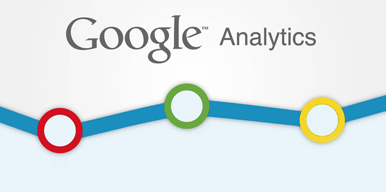

Os presentamos una metodología que os ayudará para entender la mecánica del marketing de contenidos y algunos datos que os convencerán.
Un contacto o lead es aquel usuario de una página web que en un momento determinado nos facilita sus datos en un formulario, perdiendo así su condición de visita anónima y convirtiéndose en un contacto sobre el que poder hacer seguimiento.

Debemos aprender para qué sirve Google Analytics ya que, es una herramienta fundamental que debemos utilizar si no queremos hacer naufragar nuestra estrategia sem, estrategia seo, nuestra estrategia general de marketing digital o simplemente queremos explotar el potencial de nuestra web.